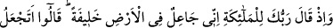
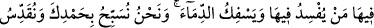
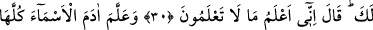
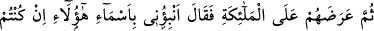
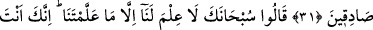
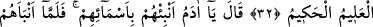
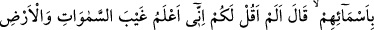
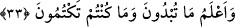

HZ. ÂDEM’İN YARATILIŞI
30. Hatırla ki Rabbin meleklere: Ben yeryüzünde bir halîfe yaratacağım, dedi.
Onlar: Bizler hamdinle seni tesbih ve seni takdîs edip dururken, yeryüzünde fesâd
çıkaracak, orada kan dökecek insanı mı halîfe kılıyorsun? dediler. Allah da onlara:
Sizin bilemiyeceğinizi herhalde ben bilirim, dedi.
31. Allah Âdem’e bütün isimleri, öğretti. Sonra onları önce meleklere arz edip:
Eğer siz sözünüzde sâdık iseniz, şunların isimlerini bana bildirin, dedi.
32. Melekler: Yâ Rab! Seni noksan sıfatlardan tenzîh ederiz, Senin bize
öğrettiklerinden başka bizim bilgimiz yoktur. Şüphesiz alîm ve hakîm olan ancak
sensin, dediler.
33. (Bunun üzerine:) Ey Âdem! Eşyânın isimlerini meleklere anlat, dedi. Âdem
onların isimlerini onlara anlatınca: Ben size, muhakkak semâvât ve arzda
görülmeyenleri (oralardaki sırları) bilirim. Bundan da öte, gizli ve açık yapmakta
olduklarınızı da bilirim, dememiş miydim? dedi.
“Rabbinin dediği zamanı hatırla” sözünde emrin vuku bulan hâdiseye değil, vakte
tevcîh edilmesi, vaktin hatırlanmasının gerekliliğindendir. Çünkü zamânın hatırlanması
o vakitte vuku bulan hâdisenin hatırlanmasını sağlar. O zaman dilimi, gözler önüne
gelince onda meydana gelen hâdiseler de gözler önüne serilmiş gibi olur.
Söylenecek söz uzun olduğu zamanlar kendisine söz söylenenin öne alınması
Arapça’da sıkça rastlanan bir durumdur. Bu ifâde tarzı öne alınan kişi ve konunun
önemine işâret olduğu gibi sona bırakılanın ne olduğuna dikkat çekmek içindir.
“Melâike” sözü melek kelimesinin çoğuludur. Allah ile insanlar arasında vâsıta
oldukları için, bu ismi almışlardır. Melekler, Allah’ın elçileridir. Çünkü “Melek”